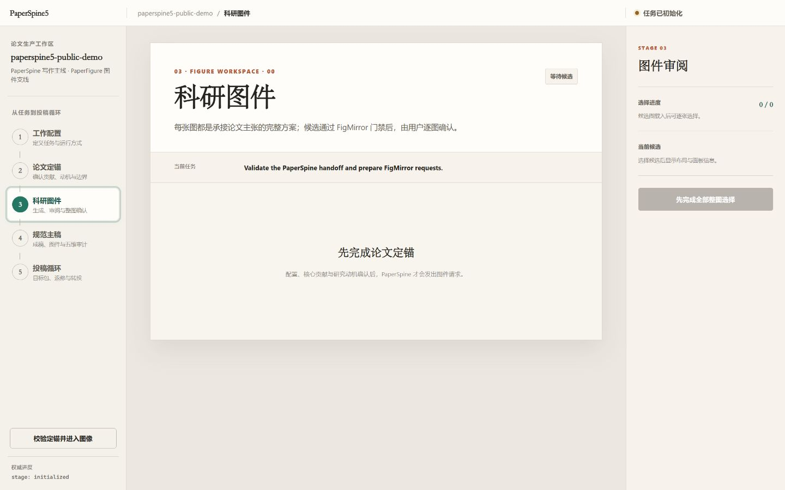

00 / HomeResearch production systemLocal-first · Human-gated
让论文沿着
证据脊柱交付。
一个本地论文生产工作区，让贡献、科研图、规范主稿与投稿材料沿着同一套项目状态推进。Agent 负责推进流程，人负责科学判断与外部授权。
LOCAL project filesWEB five-stage workspaceHUMAN decision gates
NEXT / INSTALL↓
01 / Install
首页之后，
先完成安装。
把从零下载、哈希校验、解压、宿主识别和健康检查交给 AI。所有按钮与可见版本都由同一份公开 manifest 驱动。
PRERELEASE · MANIFEST DRIVEN0.3.0-rc.1；无独立密码学签名。先核对 SHA-256，再安装；更新仍是手动或明确 opt-in，默认关闭。
AI INSTALL / ZERO → WORKSPACE
把这一段交给 AI。
产品是同一套 PaperSpine5 工作区；通用安装包以 Skill 方式接入，Codex、Claude Code 与 DSH 另有宿主原生包。它们不是四个不同产品。
AI INSTRUCTION / VERIFIED DOWNLOAD
请从零开始下载并安装 PaperSpine5 0.3.0-rc.1：
1. 读取 https://github.com/WUBING2023/PaperSpine/releases/download/v0.3.0-rc.1/manifest.json；
2. 根据当前宿主选择其中一个包。普通 Codex / Claude Code 优先用 paperspine5-skill-0.3.0-rc.1.zip；需要宿主原生插件时再选对应插件包；
3. 从 manifest 的 download_url 下载 ZIP，计算 SHA-256，并与 manifest 中同名制品逐字符比较；不一致立即停止；
4. 解压到新的持久目录，先阅读 README.md、INSTALL.md、UPDATE.md 与 UNINSTALL.md；
5. 运行包内安装方式。通用包在 Windows/Codex 运行 .\install.ps1 -Target codex；Claude Code 改为 -Target claude-code。macOS/Linux 运行 bash install.sh --host codex 或 --host claude-code；
6. 不覆盖 settings.json、config.toml 或无关 Skill；如缺少 Python 3 或可选科研图依赖，先说明来源与改动范围，再征得许可；
7. 必须确认 runtime health 返回 PASS，并在安装后开启新任务或重启宿主，确认 PaperSpine5 可被发现；
8. 只有存在真实 integration_job.json 时才启动 127.0.0.1 本地网页；不生成假论文任务，不暴露到公网；
9. 最后分别报告下载 URL、文件字节数、SHA-256、安装目标、备份、runtime health、宿主重新发现和网页 snapshot。未验证项写 NOT VERIFIED。
我想看每种包的安装边界 展开
通用包
install.ps1 -Target codex一个项目状态，
五个工作阶段。
网页把当前阶段、待确认事项和交付边界放到同一视野里；权威状态仍然保存在项目文件中，因此换会话、返修或转投都可以沿着既有证据继续。

03 / Why PaperSpine5?
论文不是一次性生成物。
真正困难的不是多写一段文字，而是让主张、证据、图件、作者决定与交付要求在多轮工作中保持一致。
01 / LOCAL AUTHORITY文件先于宣称
配置、证据、图件决定、主稿和交付清单都有明确落点。网页是操作窗口，不是唯一记忆。
02 / HUMAN GATES人先于外部动作
贡献、动机、整图、作者声明和投稿授权不能因为 Agent 能执行，就被默认为已经允许。
03 / RECOVERABLE STATE恢复先于重做
五阶段共享同一状态合同。换会话、返修或转投时，不必重新猜测已经做过的科学决定。
04 / From brief to publication cycle
从配置到投稿循环，
一步一步走。
像 OpenDesign 展示产物路径一样，这里直接说明每一步产生什么、等待谁确认，以及下一步消费什么。
- 01
定义任务、材料、语言、引用、图件策略和交付偏好。
- 02
贡献与动机由人确认，再约束章节主张和结果组织。
- 03
FigMirror 生成完整候选，逐图审阅并留下可追溯决定。
- 04
正文真实消费图件，最终像素与五维门禁全部复核。
- 05
本地准备目标包、返修与转投计划；没有自动投稿按钮。
05 / What can you deliver?
交付的不是一份孤立文件。
每类成果都能回到自己的来源、确认记录和下一步用途。
01 / CANONICAL规范主稿
章节主张、引用和已确认图件回到同一规范真源，再输出 LaTeX、PDF 或 Word。
LaTeX · PDF · Word
02 / FIGURE图件证据包
完整候选、整图审阅、源文件与输入链一起保留。
PPTX · SVG · PNG
03 / TARGET目标投稿包
期刊格式、声明和检查清单被显式组织；准备完成不等于已经投稿。
Checklist · Cover · Source
04 / CYCLE返修与转投
审稿意见和新目标继续消费既有状态，不把决定藏进聊天记录。
Response · Diff · Transfer
04
HOST ADAPTERS / SAME COREUniversal：Codex / Claude Code Skill
Codex：personal marketplace
Claude Code：marketplace bundle
DSH：Web profile bundle
08 / Verified separately
不把数字相加。
把证据分别说清楚。
267PaperSpine
本 RC 接受的 Python 回归基线
60PaperFigure
科研图引擎回归基线
19Integration
V5 整合测试基线
5Stages
工作配置到投稿循环
ScientificVisualCitationMetadataPortable
09 / Release boundary
可以公开核验。
仍然只是 RC。
四个 ZIP 共享同一 176 文件核心和同一 core digest。没有签名安装器、第二台干净机器、真实远程旧版升级、macOS/Linux 实跑或全部宿主模型调用证据；Open Release Beta/276 不在本 RC。
CORE9eed412b…ba95f · 176 files
UPDATEmanual + explicit opt-in · default off
HOST QACodex / Claude Code / DSH local validation
EXTERNAL SUBMISSIONnever authorized by this release
PaperSpine5 · 0.3.0-rc.1
不是让 Agent 替你相信一篇论文。
是让每一步，都有证据可回去。
10 / Frequently asked
开始之前，
先把边界问清。
01PaperSpine5 只是一个 Skill 吗？
不是。它是本地优先的论文生产工作区，以 Skill 或插件方式接入宿主，并包含五阶段网页交互。
02四个下载包是四套产品吗？
不是。它们适配不同宿主安装合同，但共享同一冻结核心。不确定时优先使用通用安装包。
03安装后会自动替我投稿吗？
不会。外部投稿、作者声明、费用与许可始终需要人的明确授权；“准备完成”也不等于“已获授权”。
04社区星图代表安装量吗？
不代表。它只表达公开 GitHub Stargazer Atlas 的聚合分布，与安装量、活跃用户和产品能力分开。